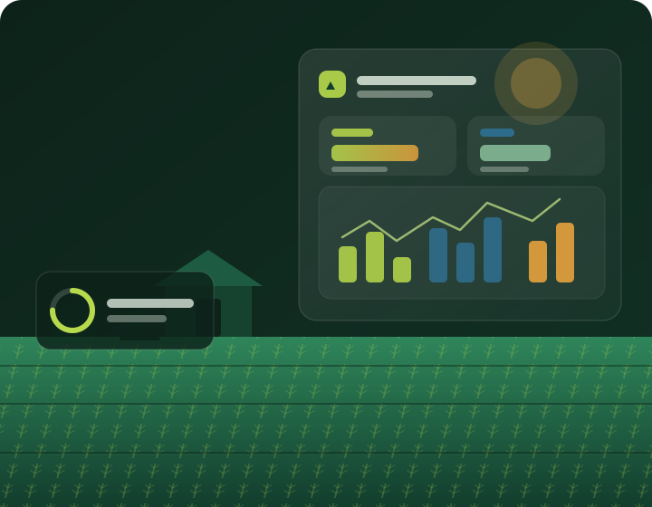

AI ফসল সুপারিশ
আপনার মাটি ও আবহাওয়ার উপর ভিত্তি করে AI সেরা ফসল সুপারিশ করে।
বাংলাদেশের কৃষকদের জন্য AI-চালিত স্মার্ট কৃষি সমাধান। মাটি বিশ্লেষণ, ফসল সুপারিশ, রোগ সনাক্তকরণ এবং বাজার বিশ্লেষণ — সব একসাথে।

আপনার কৃষি কাজকে সহজ ও লাভজনক করতে আমাদের আধুনিক AI প্রযুক্তি
আপনার মাটি ও আবহাওয়ার উপর ভিত্তি করে AI সেরা ফসল সুপারিশ করে।
ছবি আপলোড করে AI-এর মাধ্যমে ফসলের রোগ শনাক্ত ও চিকিৎসা পরামর্শ।
সর্বশেষ ফসলের দাম, ট্রেন্ড এবং লাভজনক ফসলের তথ্য।
৬৩টি জেলার সরাসরি আবহাওয়ার তথ্য, ৭ দিনের পূর্বাভাস এবং কৃষি পরামর্শ।
৮৬,৫৯০+ মাটির রেকর্ড, NPK পরিসংখ্যান এবং সার সুপারিশ।
বাংলায় কৃষি সম্পর্কে যেকোনো প্রশ্ন করুন, AI উত্তর দেবে।
সহজ প্রক্রিয়ায় আপনার কৃষি কাজকে স্মার্ট করুন
আপনার জেলা বা মানচিত্রে ট্যাপ করে অবস্থান নির্বাচন করুন।
মাটির NPK, pH ও জমির তথ্য দিন অথবা রেকর্ড থেকে বেছে নিন।
AI আপনার মাটি, আবহাওয়া এবং বাজার বিশ্লেষণ করবে।
ফসল সুপারিশ, সার পরিকল্পনা এবং বাজার তথ্য পান।
আমাদের AI মডেল বাংলাদেশের কৃষি প্রেক্ষাপটে প্রশিক্ষিত, যা স্থানীয় মাটি ও আবহাওয়ার তথ্য ব্যবহার করে সঠিক সুপারিশ দেয়।
Random Forest + XGBoost মডেল, ৬৬% নির্ভুলতা
Gradient Boosting মডেল, R²=0.90 নির্ভুলতা
OpenWeatherMap API থেকে রিয়েল-টাইম তথ্য
মডেল পারফরম্যান্স
সত্যিকারের কৃষকদের অভিজ্ঞতা ও সাফল্যের গল্প
বাংলাদেশের হাজার হাজার কৃষক ইতিমধ্যে এই প্ল্যাটফর্ম ব্যবহার করছেন।